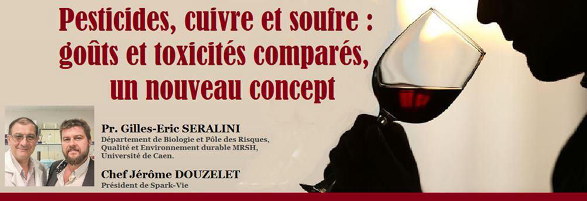
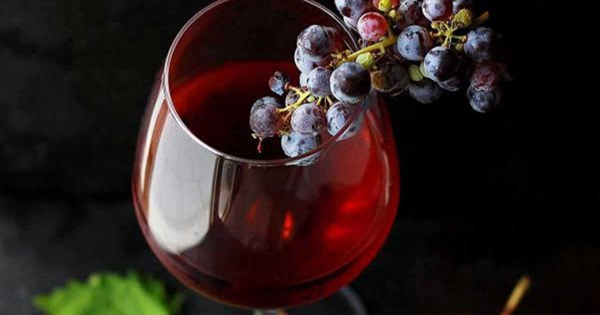
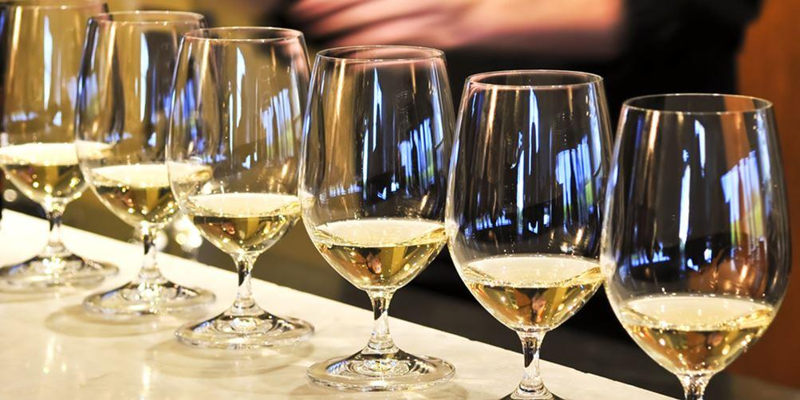
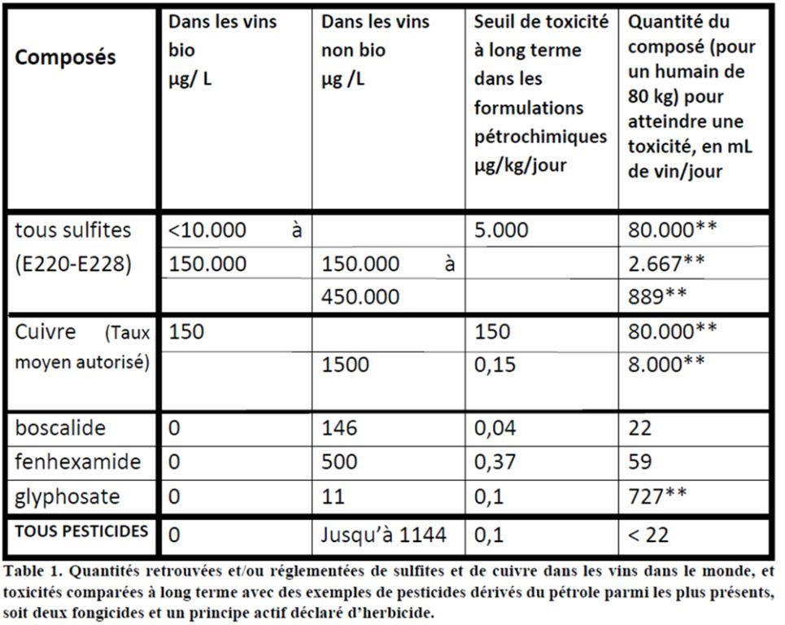
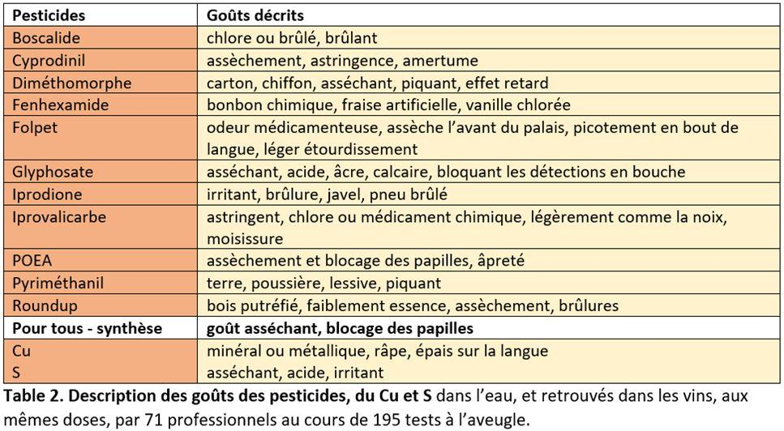
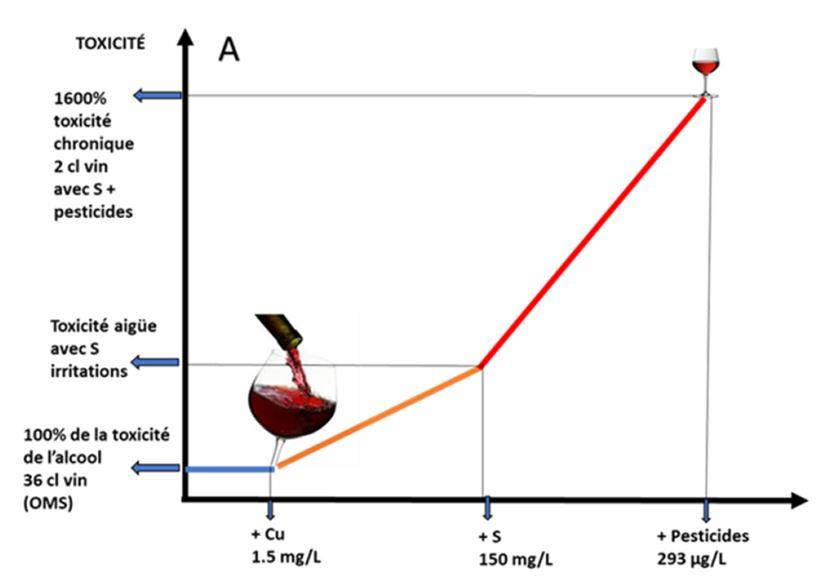
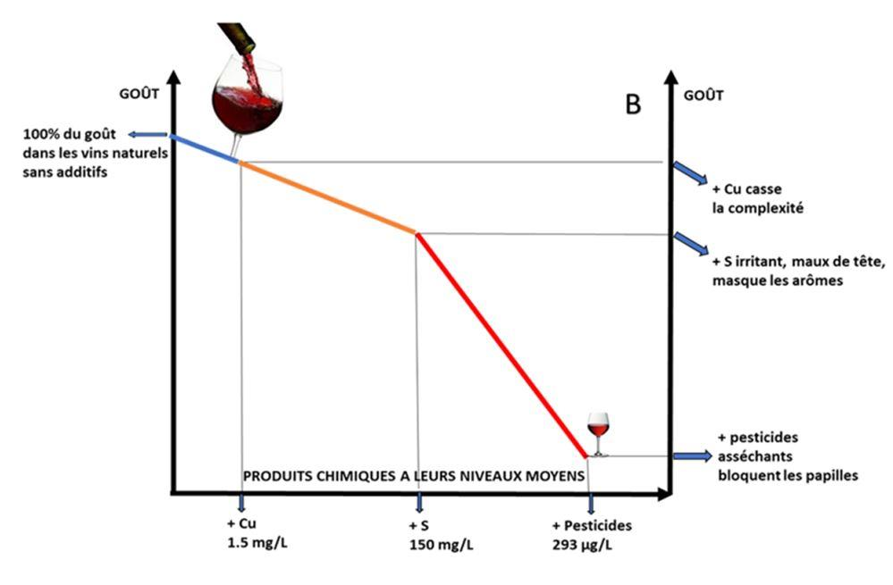
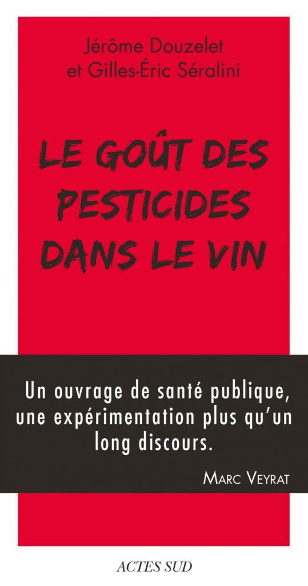
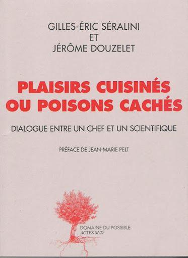

Pesticides, cuivre et soufre : goûts et toxicités comparés, un nouveau concept
par Gilles-Éric SERALINI et Jérôme DOUZELET

Les auteurs sont respectivement découvreur du goût des pesticides et chercheur en toxicologie des pesticides ; ils ont co-écrit pour aller plus loin « Poisons cachés ou plaisirs cuisinés ? » et « Le goût des pesticides dans le vin », deux livres aux Ed. Actes Sud, ainsi qu’avec Jean-Charles Halley « Le manifeste du Cu (cuivre) » Ed. BBD, et trois articles scientifiques en anglais sur ces sujets, en open source sur www.seralini.fr : Food Nutr. J, 8, 161, 2017 ; 9, 196, 2019 ; 6, 231, 2021, ou sur www.spark-vie.com (rubrique Soutenons la recherche) qui contiennent les références citées dans cet article.

Résumé
Dans un travail comparatif de plus de 195 expériences, nous avons identifié les goûts dans l’eau des principaux pesticides aux doses retrouvées dans les vins, avec 71 spécialistes du vin ou de l’alimentation, dans des tests dits de primo-détections, puis du cuivre (Cu) et du soufre (S). Les professionnels ont ensuite réussi en majorité à les retrouver à l’aveugle dans les vins.
Ils ont témoigné que cela faisait progresser leur homonculus, sorte de catalogue interne de sensations, et que cela pouvait s’apprendre en renouvelant les tests. Au-delà de cette étape, nous avons comparé les toxicités chroniques des pesticides de synthèse, du Cu et du S, mais aux doses où ils sont retrouvés et en tenant compte des recherches récentes sur leurs produits de formulations avec lesquels ils sont répandus sur les vignes ou dans le vin ; ceux-ci sont des dérivés de pétrole et des métaux lourds identifiés mais non déclarés, et non présents lorsque le Cu ou le S proviennent d’extractions minérales. Nous en déduisons un nouveau concept : il est possible aux humains et pour le vin, comme on le savait par ailleurs pour les mammifères, de ressentir par le goût la toxicité potentielle de ces produits. 2
Nous comparons ici pesticides, Cu et S, car ils sont les produits les plus utilisés sur la vigne ou dans le vin. Les vignes sont parmi les plantes les plus traitées par les pesticides de synthèse dans le monde. Cu et S peuvent provenir d’extractions minérales et plus communément aussi de la pétrochimie, ce sont des composés autorisés sous diverses formes même en agriculture biologique, au contraire des pesticides. Ils sont parfois considérés comme ces derniers, ce qui dépend en fait de leur concentration, car à faible dose Cu et S sont des composés essentiels à la vie ; mais ils sont aussi retrouvés dans le vin. Cependant personne à ce jour n’avait à notre connaissance comparé leurs toxicités relatives avec les pesticides, leurs doses dans les vins bio ou non et surtout leurs goûts. Ces derniers sont reconnaissables et peuvent s’apprendre. Nous les avons abordés par des tests dits de primo-détection. Ce ne sont pas des tests sensoriels classiques car il s’agit ici de découvrir des goûts jusqu’alors inconnus, au moins pour les pesticides, d’abord dans l’eau afin de les caractériser aux doses retrouvées dans les analyses, puis de les déceler dans les vins. Cela est donc très différent d’une dégustation œnologique classique.

Rôles comparés
Le Cu et le S sont d’abord des composés essentiels à la vie à des doses physiologiques, que la plante extrait de son environnement. Ils entrent dans la cellule comme cofacteurs d’enzymes, et pour le S par exemple pour assurer la conformation spatiale de la plupart des protéines, ou pour solubiliser des métabolites, des arômes ou des hormones. Sans eux, pas de photosynthèse, ni de tige, de bois, ni de métabolisme, ou de croissance. Voilà pourquoi ils sont tout le contraire des pesticides de synthèse. Mais à plus forte dose Cu et S, comme beaucoup de composés naturels, deviennent toxiques pour l’environnement et l’humain plutôt par saturation des fonctions organiques. C’est par ce mécanisme qu’ils deviennent des pesticides. Ils sont aussi parfois retrouvés, pour leur efficacité rapide mais sans être déclarés, dans les formulations. Ils sont donc moins présents dans les vins bio qui interdisent les pesticides d’origine pétrochimique.
Ils existent aussi en tant que principes actifs déclarés sous diverses formes commercialisées avec des formulants à base de pétrole ; ils contiennent alors des métaux lourds. Ils peuvent provenir par ailleurs d’extractions de mines, ce 3 qui, nous le verrons plus bas, va modifier leurs toxicités. Ils sont utilisés par exemple en sels de Cu, voire associés à des sulfates, surtout aux champs, et de SO2 et sulfites au chai, parfois liés à des complexes et non inter-convertibles pour le S dans les vins. C’est le SO2 total dans les vins qui est réglementé.
Doses comparées
De loin, le S est l’additif utilisé le plus important en quantité, et le plus retrouvé dans les vins. Il est d’ailleurs le seul indiqué sur l’étiquette. Sa réglementation varie pour les vins bio et non bio, à travers le monde. Les deux premières colonnes de la Table 1 comparent les dosages du S, du Cu et des pesticides en moyenne selon les autorisations, sauf dérogations spécifiques. Les deux colonnes suivantes seront vues dans le paragraphe Toxicités.
On le voit, il y a donc en général moins de S et de Cu dans les vins bio. Et encore moins dans les vins naturels qui n’utilisent aucun additif. Cependant, les sulfites étant des produits de défense normaux des plantes et des levures, on en retrouvera toujours un peu (moins de 10 mg/L) dans le vin. Il n’y a pas de pesticides dans les vins bio dans nos études, sur 250 molécules mesurées dans une centaine de bouteilles, ou dans un cas des traces. Or l’originalité de notre étude est d’avoir choisi des couples de vins voisins de même terroir, même cépage, et même année. Les résultats montrent que 98% des vins non bio contiennent de 1 à 6 pesticides.
Goûts comparés
Beaucoup de pesticides ont des structures moléculaires proches des arômes, car ils possèdent des cycles de carbone dits aromatiques, comme les parfums et les tannins. Il en va de même pour les formulants à base de pétrole qu’ils contiennent ; et c’est pour cela qu’ils collent et sont détectés par les papilles. Ils présentent en fait des doses et structures comparables à des arômes connus et reconnaissables, comme le sotolon des vins jaunes, ou bien les thiols.
Au moins un de ces pesticides a été reconnu et décrit par 85% des dégustateurs, 58% les ont tous décrits, et 57% les ont identifiés à l’aveugle dans le vin dès la première fois. Cet exercice devient plus facile avec la pratique. Le Cu a été détecté dès 0,15 mg/L par l’ensemble des 30 premiers testeurs, il modifie le goût du vin dès 1 mg/L. Les sulfites sont irritants dès 10 à 30 mg/L dans l’eau ; ils sont facilement détectables dans le vin dès 30 mg/L.
Les pesticides sont connus pour inhiber la formation des arômes dans la plante ; les fongicides qui en sont un sous-groupe limitent le développement des levures naturelles, ce qui oblige l’adjonction en grandes quantités de souches isolées en laboratoire, cela homogénéise et réduit la variabilité aromatique du vin. De plus, leurs résidus dans le vin bloquent les papilles avec des quantités de l’ordre du μg/L seulement. Le Cu et le S en excès réduisent aussi le microbiote présent avec la vigne, lequel favorise la fermentation naturelle et la richesse aromatique. Le Cu atténue aussi par sa présence la complexité du breuvage ; le S partage le côté asséchant des pesticides, mais son goût se rapproche plus de l’allumette brûlée, tout en étant plus fort mais éphémère, et en masquant ou dénaturant des arômes.
Les goûts à faible dose de tous ces composés pourraient avoir été détectés auparavant voire décrits par des spécialistes, mais assimilés avec ceux d’autres composés du vin.
Toxicités comparées
Le fait que l’on ait identifié des résidus de pétrole non déclarés dans les pesticides de synthèse, c’est-à-dire dans les formulations, multiplie d’un facteur moyen de 1000 leur toxicité chronique sur des cellules humaines, et différents organismes de l’écosystème (Marc et col. 2004 ; Richard et col. 2005 ; Benachour et col. 2009 ; Spinaci et col. 2020). Nous avons identifié ces composés par spectrométrie de masse : il y a entre autres des chaînes polyethoxylées (les POEA), des hydrocarbures polycycliques aromatiques, et des métaux lourds comme le plomb et l’arsenic (Mesnage et col. 2013 ; Defarge et col. 2017 ; Seralini et Jungers, 2020).
Les toxicités connues des molécules de pesticides déclarées actives sont déjà supérieures au Cu et au S, même sous les limites réglementaires dans l’eau ou les aliments. Or les résidus de pesticides ne sont pas réglementés dans le vin (mais seulement dans le raisin). On y a pourtant retrouvé jusqu’à 11440 fois ce 6 qui est autorisé dans l’eau de boisson. Les formulations complètes prises en compte de manière chronique réduiraient donc les recommandations de consommation de l’alcool par l’OMS pour les vins avec pesticides de 36 à 2 cl/jour (Fig. 1).

Conclusion
Le goût des pesticides retrouvés dans le vin est reconnaissable lorsqu’on les a goûtés au préalable dans l’eau et aux mêmes doses. En général, ils ont un effet asséchant. Ils peuvent être différenciés des tannins, de leur astringence, comme des sulfites. Par exemple, le fenhexamide ressemble au goût de bonbon anglais apporté par les arômes de certaines levures. Le glyphosate n’a pas le même goût ni la même toxicité que son produit de formulation, le Roundup. Les pesticides contiennent des dérivés de pétrole non déclarés, et des métaux lourds tels le plomb ou l’arsenic, comme il a été mis en évidence dans leurs formulations, qui amplifient leur toxicité chronique d’un facteur 1000 environ, et sont détectables au palais.
Ce facteur vient s’ajouter de manière non négligeable à la toxicité chronique de l’alcool, alors que les pesticides de synthèse sont en général de l’ordre de la centaine de μg/L dans les vins non bio.
Les sulfites, composés plus naturels métabolisés par le foie, sont détectables et changent les sensations du vin dès 30 mg/L ; et leur toxicité principalement aigüe peut être ressentie par certains : dès le premier verre maux de tête, allergies... Le cuivre, bien détectable dès 0,15 mg/L, n’est généralement pas toxique aux doses retrouvées dans le vin, mais peut modifier son goût en masquant des arômes à doses plus élevées. On sait qu’il intoxique l’environnement progressivement par sa bioaccumulation. Il peut être nécessaire à petite dose pour stimuler les défenses de la plante, si le sol en manque. Il est important de s’affranchir d’une intellectualisation trop classique de l’analyse des goûts des vins, et apprendre à mieux connaître celui de ses additifs, d’abord dans l’eau, puis de faire confiance à ses sensations plutôt qu’aux données qui ne tiennent pas compte de ces paramètres. Un nouveau concept se fait jour : celui de l’apprentissage possible de la détection de la toxicité chronique des additifs du vin, par le nez, la langue, ou le palais.
G-E. S. et J. D.
Remerciements. La Fondation Alpes Contrôles ayant financé une partie de ce travail est vivement remerciée, tout comme le Pôle Risques, Qualité et Environnement Durable de l’Université de Caen Normandie, et Jean-Charles Halley de Les Mets Chai, Caen, pour les expériences sur le cuivre et le soufre.
Bibliographie
Benachour N., Seralini GE. (2009) Glyphosate formulations induce apoptosis and necrosis in human umbilical, embryonic, and placental cells. Chem Res Toxicol. 22, 97-105.
Defarge N., Spiroux de Vendômois J., Seralini G.E. (2017) Toxicity of formulants and heavy metals in glyphosate-based herbicides and other pesticides. Toxicol Rep. 5, 156-163.
Marc J., Mulner-Lorillon O., Bellé R. (2004) Glyphosate-based pesticides affect cell cycle regulation. Biol Cell.96, 245-9.
Mesnage R., Bernay B., Seralini G.E. (2013) Ethoxylated adjuvants of glyphosate-based herbicides are active principles of human cell toxicity. Toxicology 313, 122-8.
Richard S., Moslemi S., Sipahutar H., Benachour N., Seralini GE. (2005) Differential effects of glyphosate and roundup on human placental cells and aromatase. Environ Health Perspect. 113, 716-20. Seralini G.E., Douzelet J. (2017) The taste of pesticides in wines. Food Nutr J. 8, 161.
Seralini G.E., Douzelet J., Halley J.C. (2019) Copper in wines and vineyards: taste and comparative toxicity to pesticides. Food Nutr J. 9, 196.
Seralini G.E., Douzelet J., Halley J.C. (2021) Sulfur in wines and vineyards: taste and comparative toxicity to pesticides. Food Nutr 6, 231.
Seralini G.E., Jungers G. (2020) Toxic compounds in herbicides without glyphosate. Food Chem Toxicol. 146, 111770.
Spinaci M., Nerozzi C., Tamanini C., Bucci D., Galeati G. (2020) Glyphosate and its formulation Roundup impair pig oocyte maturation. Sci Rep, 10, 12007.
Partager cette page